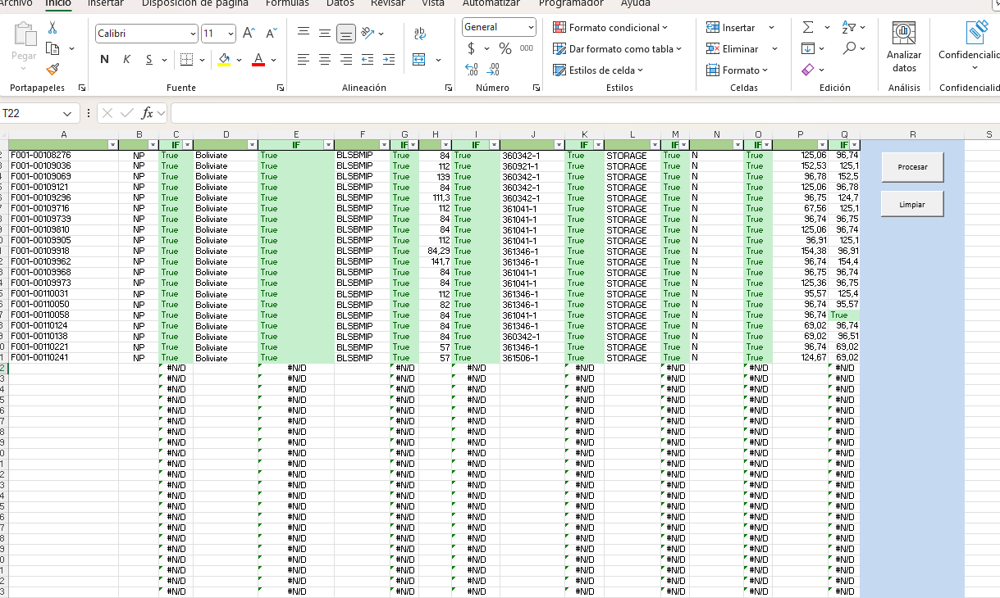

Proyectos Personales

Control de Facturas
Dashboard de Power BI que compara facturas entre reportes contables.

KPIs de gestión
Visualización de indicadores clave de desempeño para áreas administrativas.

Macros de validación
Macros en Excel para verificar y automatizar controles contables.